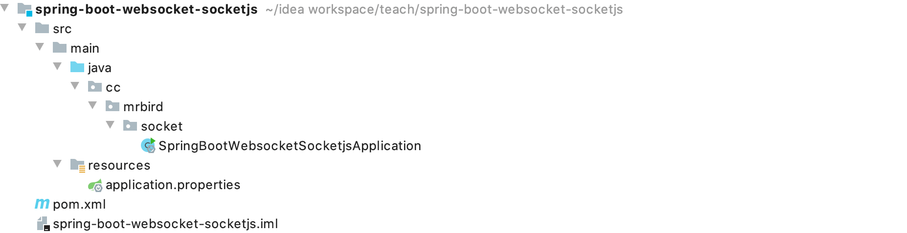
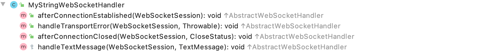
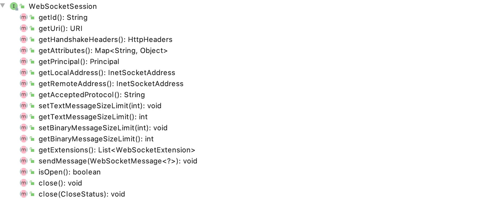
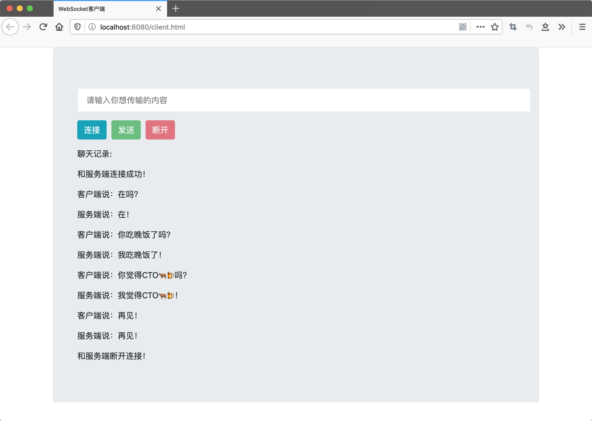

本节简单介绍下如何在Spring Boot引入WebSocket，实现简单的客户端与服务端建立长连接并互发送文本消息。
框架搭建
新建一个Spring Boot项目，artifactId为spring-boot-websocket-socketjs，项目结构如下图所示：

项目的pom内容如下：
1 |
|
引入了spring-boot-starter-websocket和spring-boot-starter-web依赖。
构建服务端
在cc.mrbird.socket目录下新建handler包，然后在该包下新建MyStringWebSocketHandler继承TextWebSocketHandler：
1 |
|
该类重写了父类AbstractWebSocketHandler的四个方法：

afterConnectionEstablished，和客户端链接成功的时候触发该方法；
handleTransportError，和客户端连接失败的时候触发该方法；
afterConnectionClosed，和客户端断开连接的时候触发该方法；
handleTextMessage，和客户端建立连接后，处理客户端发送的请求。
WebSocketSession对象代表每个客户端会话，包含许多实用方法：

方法见名知意，就不赘述了。
此外，因为我们的目的是实现和客户端的通信，并且内容为文本内容，所以我们继承的是TextWebSocketHandler；如果传输的是二进制内容，则可以继承BinaryWebSocketHandler，更多信息可以自行查看WebSocketHandler的子类。
接着在cc.mrbird.socket目录下新建configure包，然后在该包下新建WebSocketServerConfigure配置类：
1 |
|
@EnableWebSocket用于开启WebSocket相关功能，我们注入了上面创建的MyStringWebSocketHandler，并将其注册到了WebSocketHandlerRegistry。
上面代码的含义是，当客户端通过/connecturl和服务端连接通信时，使用MyStringWebSocketHandler处理会话。withSockJS的含义是，通信的客户端是通过SockJS实现的，下面会介绍到。
构建客户端
SockJS是一个JS插件，用于构建WebSocket，兼容性好。
在resources目录下新建static包，然后在该包下新建client.html：
1 |
|
html，css那些都不重要，重要的是我们引入了SockJS库。在connect()方法中，我们通过new SockJS(/connect)和上面的服务端建立了Socket通信。SockJS对象包含几个常用的实用方法：
onopen，和服务端讲了连接后的回调方法；onmessage，服务端返回消息时的回调方法；onclose，和服务端断开连接的回调方法；send，发送消息给服务端；close，断开和服务端的连接。
上面的JS较为简单，其他逻辑自己看看吧。
通信测试
启动项目，浏览器访问：http://localhost:8080/client.html：

源码连接：https://github.com/wuyouzhuguli/SpringAll/tree/master/76.spring-boot-websocket-socketjs。